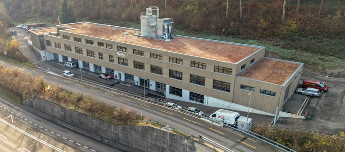

F / SKEHRSATZ · BE
Fuhrer Schreinerei AG
Fenster
formen
Räume.
Fenster, Türen und Innenausbau aus Kehrsatz. Ein Betrieb mit einem breiten Spektrum am Gebäude.
Kompetenzen ansehen ↘Fenster & TürenFenster & Türen
Die Öffnung ist Teil der Architektur.
Fenster und Türen stehen im Zentrum des Angebots. Dazu kommen Innenausbau und Spezialmontagen.
Arbeiten am Gebäude
Vom Fenster bis zum Dach.
- Dachausbauten & Lukarnen inklusive Fenster
- Dachflächenfenster & Fassadensanierungen
- Kleinere Zimmerarbeiten, Dachreparaturen & Carports

Kirchackerweg 31
3122 Kehrsatz
Kontakt / Kirchackerweg 31 · 3122 KehrsatzFuhrer Schreinerei AG
Lassen Sie uns über Ihr Bauvorhaben sprechen.
031 961 35 55